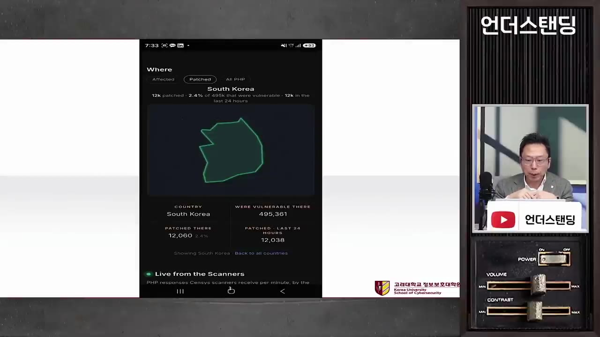
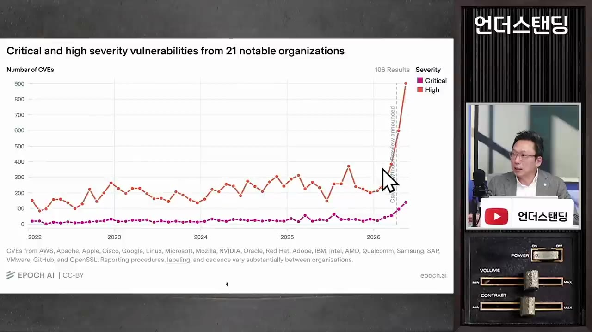
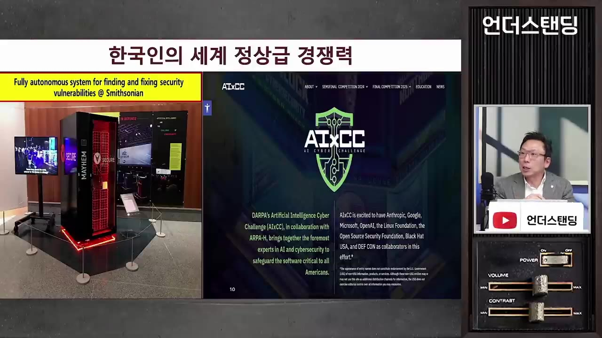
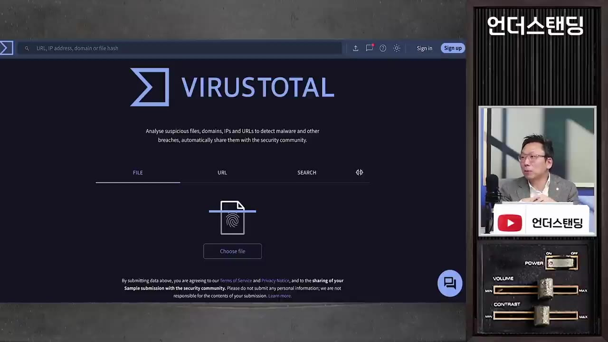

한국 웹사이트 50만개 무방비 상태. 한국 보안의 충격적 민낯 (고려대 정보보호대학원 김승주 교수)
🎙️ 자막 대신 영상 음성을 받아써서 정리 (ko (음성 받아쓰기·GPU))
▶ 원본 영상 보기한눈에 보기
- 2026년 10월 공식화된 PHP 서버 장악 취약점은 2024년에 이미 발견됐는데, 속도 저하 우려로 패치가 미뤄지다가 AI가 공격 도구까지 만들어 내면서 현실의 위협이 됐다.
- 한국에는 지원이 끝난 PHP 6·7 버전 사이트가 많아서, 패치를 받으려면 엔진부터 8 버전으로 올려야 한다. 사이트가 멈추거나 오작동할 것이 두려워 다들 미루고 있다.
- 한국에서 취약한 사이트는 11만 개부터 45~50만 개까지 추정이 엇갈리고, 정부는 실시간 현황을 내지 못한다. 미국은 자산 파악을 7일 주기로 자동화한다.
- AI가 공격 비용을 크게 낮춰서 "중요한 곳만 지킨다"는 선택과 집중식 보안이 더는 통하지 않는다. 지금 뚫리는 곳은 고난이도 해킹이 아니라 관리가 안 된 주변부 사이트다.
- 교수는 공문으로 하는 전수조사와 "혼내기" 위주의 대책을 비판하고, 임기를 넘겨 이어지는 기초 다지기(자산 식별 자동화)와 부처를 조율하는 컨트롤타워가 필요하다고 주장한다.
이런 분께 도움이 됩니다
- 쇼핑몰·홈페이지를 운영하거나 맡고 있어서 "우리 사이트도 해당되나?"가 궁금한 분.
- 최근 잇따른 개인정보 유출 사고의 구조적 원인을 알고 싶은 분.
핵심 내용
PHP 취약점 사건의 전개
- PHP는 웹사이트를 만드는 프로그래밍 언어다. 이번 결함을 이용하면 해커가 웹사이트가 있는 서버를 완전히 장악할 수 있다. 서버 안의 정보를 모두 가져가고, 관리자처럼 원격 조작하고, 자기 해킹 프로그램을 설치할 수도 있다. (1:51)
- 사이트를 다른 내용으로 바꾸는 것은 기본이고, 회원 정보나 카드번호 같은 데이터도 빼 갈 수 있다.
🔁 취약점 공식화까지의 경과
- 2024년 발견
- 2026년 AI 탐지
- 패치 준비
- 엠바고 파기
- 공격 시작
- 12024년 발견
취약점이 처음 발견됐다. 고치면 속도가 느려져 운영 그룹 안에서 의견이 갈렸고 업데이트가 미뤄졌다.
- 22026년 AI 탐지
2년 뒤 AI가 이 취약점을 찾아내고, 쉽게 공격할 수 있는 도구까지 만들어 냈다.
- 3패치 준비
운영 단체가 업데이트 코드를 만들고 배포 시점을 정해 관계자들에게 엠바고(공개 금지)를 걸었다.
- 4엠바고 파기
보안업체 한 곳이 업데이트 정보를 인터넷에 먼저 흘렸다.
- 5공격 시작
해커들이 이를 알아채고 공격을 시작했다. 계획보다 빨리 패치를 배포하고 대대적으로 공지했다. (4:30)
💡 2024년에는 "전문가나 찾을 수 있는 결함"이었다. AI가 그 격차를 없앴다.
왜 업데이트를 못 하나
- 서비스 지원 종료(EOS, End of Service)된 PHP 6·7 버전은 패치 코드가 아예 나오지 않는다. 최신 8 버전으로 엔진을 먼저 올려야만 패치를 받을 수 있다. (5:41)
- 엔진을 올리려면 사이트를 중지시켜야 하는데, 24시간 365일 운영해야 하는 곳이 많다.
- 업그레이드 뒤에 사이트가 안 돌아갈 수도 있다. 교수는 이 걱정이 과도하지 않다고 본다.
- 웹호스팅 업체는 수많은 사이트를 한꺼번에 돌려서 결정이 더 어렵다.
- 보안 책임자 입장에서는 업데이트하다 서비스가 죽으면 책임을 지고, 안 하면 문제가 없는 것처럼 보인다. 그래서 미루게 된다. (13:28)
- 오픈소스라 비용은 문제가 아니다. 문제는 오작동에 대한 두려움이다.
- 큰 기업은 보안 인력이 있고 정부 점검도 받는다. 반면 1~3인 영세 쇼핑몰은 권고문을 봐도 자기가 해당되는지조차 모른다.
💡 건물 비유로는 "새 시멘트로 다시 지으라"는 말과 같다. 이미 굳은 건물에는 보강재를 넣을 수 없다.
규모와 자산 파악 부재
- 방치된 웹사이트가 많다. 홈페이지부터 만들고, 사업이 안 되면 지우지 않고 그냥 둔다. 관리자도 없고 존재조차 모르니 업데이트가 될 리 없다. (15:21)
- 취약 사이트 규모 추정은 약 11만 개와 45~50만 개로 갈린다.
- 외국 보안 서비스(센시스)는 국가별 취약 서버 수와 패치율을 실시간으로 보여 준다. 화면에는 한국이 49만 5,361대, 패치율 2.4%로 나온다. 한국 정부는 이런 수치를 내지 못했다. (18:14)

- 내가 뭘 가졌는지 모르면 지킬 수 없다. 이것이 자산 식별이다.
- 카드사 해킹 사고도 같은 구조였다. 다른 서버는 다 패치했는데 서버 한 대만 "존재하는 줄 몰라서" 못 했고, 그곳으로 뚫렸다. (26:38)
- 사고 조사에서 보면 구매 대장과 현장이 맞지 않았다. 대장에 없는 컴퓨터가 있고, 끊었다던 인터넷에 연결돼 있고, 서비스가 끝난 것이 돌아가고 있었다.
AI가 바꾼 공격의 경제학
- 예전에는 북한 해커처럼 4~5명 팀이 공격하는 경우, 얻을 이득이 인건비보다 커야 움직였다. 그래서 개인정보가 적은 사이트는 공격 대상이 아니었고, 보안도 선택과 집중이 통했다. (22:01)
- AI는 이 진입 비용을 낮춘다. 대출 모집인 사이트 해킹에는 자가 진단 도구(자막상 이름 불분명, "아텍스"로 들림)에 AI(딥시크)를 연결해 썼고, 개인정보를 어디에 팔지는 클로드에게 물어본 것으로 분석됐다. 다른 도구 개발에는 그록과 GLM을 썼다. 글로벌 보안업체 클라우드스트라이크의 분석이다. (22:52)
- 한 명이 "원맨팀"이 되면서 예전엔 수지가 안 맞던 사이트도 수익이 나는 대상이 됐다.
- 하버드 연구팀 논문(2024년경)은 생성형 AI로 피싱 사기를 하면 원가를 95%까지 줄일 수 있다고 봤다.
- 방어자는 모든 자산을 동일한 수준으로 관리해야 하고, 공격자는 구멍 하나만 찾으면 된다.
- 지금 뚫리는 곳은 고난이도 해킹이 아니라 "허접한 기술"로, 관리가 안 된 사각지대 사이트다. AI가 24시간 찾아내 드러났을 뿐이다. (36:10)
- 요즘 사고의 공통점은 메인 서비스가 아니라 주변부 사이트가 털린다는 점이다. 유출 건수도 500건, 1,000건 규모로 작다.
- 언론이 모든 사고를 "AI가 너무 뛰어나서"로 묶는 것은 착시라고 교수는 말한다.
- 취약점 신고 건수는 2025년까지 300개 안팎이었는데, AI가 등장하면서 가파르게 올랐다.

- 자전거 숫자 자물쇠(000~999)를 AI가 몇 시간 안에 다 돌려 보는 것과 같다는 비유가 나온다.
💡 AI로 AI를 막는다는 말은 맞지만, 자산을 파악하지 못하면 AI도 막을 수 없다. 교수는 전문가 회의에서 자산 식별이 작년부터 1순위라고 전한다.
방어 비용과 과도기 전망
- 교수는 지금을 과도기로 본다. 방치됐던 취약점이 AI로 한꺼번에 드러나는 시기이고, 방어 쪽도 AI로 한 번 대대적으로 점검하면 발견되는 취약점 수는 줄어들 것이라는 전망이다. (39:00)
- 다만 공격자는 하나만 찾으면 되고 방어자는 다 막아야 한다. 그래서 롱테일(이용자가 적은 사이트)까지 완벽히 막기는 어렵다. 현실적으로는 "완전 방수"가 아니라 생활방수 수준에서 합의점을 찾는 것이 필요하다.
- 한국이 뚫리는 것으로 보이는 이유는 "기술부채(보안부채)"가 드러나서다. 통신사 해킹은 2021년에 뚫렸는데 2025년에 알았고, 정부 시스템 사고도 2022년에 뚫린 것을 2025년에 발견했다. (40:55)
한국 정부 대책의 한계
- 작년 10월 범부처 종합대책에서는 금융위가 261개 금융기관을 전수조사해 사각지대를 없애겠다고 했다. 그런데 사고는 계속된다. 이유를 묻자 관계자는 "고객 정보를 대량으로 담은 핵심 서비스 중심으로 점검했다"고 답했다. (27:37, 28:37)
- 지금 대책도 또 공문으로 하는 전수조사와 "안 하면 처벌한다"는 메시지다. 교수는 "공부 못하면 혼난다고 성적이 오르면 누구나 일타강사"라고 비꼰다. 과거 대책이 무엇을 놓쳤는지에 대한 반성이 없다는 것이다. (32:20)
- 정부는 화려한 대책을 내놓으려 하지만, 기초에 충실해야 한다고 교수는 말한다. 지금 대통령이 보안에 관심이 많아도 임기 안에는 계속 뚫릴 수밖에 없으니, 다음 정부에 좋은 환경을 물려준다는 생각으로 기초를 다져야 한다는 것이다. 경부고속도로 비유가 나온다.
- 정책의 지속성도 문제다. 한국은 2015~16년에 이미 AI 해킹에 대비하겠다는 정책을 냈는데 일회성 이벤트로 끝났다. 미국은 2016년 AI끼리 해킹하는 대회(사이버 그랜드 챌린지)를 열고, 작년에 LLM 기반 후속 대회(AI CC)까지 이어 갔다.

되풀이되는 사고: 바이러스토탈 사례
- 공군 1호기 탑승자 명단이 바이러스토탈에 올라가 유출됐다. 바이러스토탈은 수십 종 백신으로 파일·주소를 검사해 주는 사이트인데, 업로드한 파일은 이용자들에게 공유된다. 개인정보가 든 파일을 올리지 말라는 경고가 입력창 바로 아래에 있다. 악성코드 감염 여부를 확인하려 올린 것으로 추정된다. (46:27, 47:21)
- 2024년에는 선관위가 내부 파일을 같은 방식으로 올렸다가 유출된 적이 있다. 같은 일이 2년 만에 반복된 것이다. (48:16)

왜 한국은 일관되게 못 가나
- 교수가 보는 핵심은 인식이다. 역대 어느 대통령 공약에서도 사이버 보안이 안보 차원의 최우선 과제인 적이 없었고, 정보보호의 날에 대통령이 직접 참석하는 일도 거의 없다는 것이다. (50:55)
- 보안을 개인정보 유출 문제로 보면 "과징금을 세게 물리자"에서 끝난다. 안보로 보면 국가가 직접 해결해야 한다.
- 미국은 무기체계를 도입할 때도 보안성 평가를 엄격히 한다. 미국이 동맹국에 "미국 수준이 안 되면 작전 정보를 공유하지 않겠다"고 통보했는데, K-방산 업체가 미국 시설 보안 인증을 받은 곳은 2년이 지나도 한 군데도 없다. (54:17)
- 정부 메시지가 민간 기업을 혼내는 쪽으로만 가는 것도 문제다. "기초가 부실한 학생에게 어디서부터 손댈지 도와주는" 단계가 빠져 있다. (52:34)
부처 간 조율 부재
- 국가정보원(공공)·과기정통부(민간)·국방·금융위가 각자 전문성은 있지만 유기적으로 움직이지는 않는다. 다른 부처 정책에는 관심이 없고, 조율 기능이 없다. (56:41)
- 미국은 법(FISMA)으로 모든 연방기관이 NIST 표준을 따르게 한다. NIST가 기본 표준을 만들면 정보기관·국방이 자기 영역 요건을 더하는 구조라 일사불란하다. (57:50)
- 한국은 그 기능을 국가안보실이 맡아야 하지만, 국정원은 국가보안기술연구소, 과기정통부는 한국인터넷진흥원, 금융위는 금융보안연구원처럼 기술 조직이 없다. 인사권·예산권도 없어서 힘이 안 실린다. 대통령이 안보실장을 자주 불러 보고 길목을 잡는 방법이 있지만 그것도 없다고 한다. (1:00:00)
교수가 현장에서 본 상황
- 교수는 침해사고조사심의위원회 위원장이다(법정기구, 10월 1일 공식 가동, 5월부터 선가동). 사고 신고가 들어오면 민관합동조사단 같은 공권력 투입 여부를 정한다. 더존 비즈온 사고와 티빙 사고(자막상 표기 불분명)의 조사단 투입도 이 위원회가 결정했다. (1:04:27)
- 언론에 나는 것보다 보고서가 훨씬 많고, "어이없는 기술로" 뚫리는 사고가 대부분이라고 한다.
- 교수의 결론: 새 컨트롤타워의 수장이 욕을 먹더라도 기초(현황 파악)를 완전히 다져서, 다음다음 임기부터 성과가 나게 해야 한다. 그러지 않으면 같은 사고가 반복된다. (1:06:22)
기억할 숫자·인용
- 한국 취약 웹사이트: 49만 5,361대, 패치율 2.4% (센시스 화면, 촬영 시점 불명). 규모 추정은 11만 개 vs 45~50만 개.
- 미국 연방정부: 자산 파악 7일 주기, 취약점 점검 14일 주기를 자동으로 수행.
- 금융위 전수조사 대상 261개 금융기관.
- 하버드 연구(2024년경): 생성형 AI 피싱 원가 최대 95% 절감.
- 통신사 해킹은 2021년에 뚫린 것을 2025년에 인지, 정부 시스템은 2022년에 뚫린 것을 2025년에 발견.
- "너 공부 못하면 혼난다? 이래서 성적이 오를 것 같으면 일타강사가 누가 못 되겠습니까?"
생각해볼 점
- 출연자는 "AI는 허접한 곳을 드러낸 것일 뿐"이라고 하지만, 취약점 신고 건수 급증 그래프는 AI 탐지 능력이 실제로 올라갔음을 보여 준다. 두 주장은 함께 볼 필요가 있다. (영상 내용과 내 의견을 구분함)
- "시간이 지나면 AI로 점검해서 취약점 수가 줄 것"은 교수의 전망이지 검증된 사실이 아니다.
- 영상은 정부 대책이 부실하다는 관점이 강하다. 정부 쪽 입장은 영상에 나오지 않는다. 취약 사이트 수도 11만과 45~50만으로 추정이 크게 갈리므로 출처를 확인해야 한다.
바로 해볼 일
- 내가 운영하거나 맡은 웹사이트·서버 목록과 PHP 등 사용 소프트웨어 버전부터 적어 본다.
- 쓰는 PHP가 지원이 끝난 6·7 버전이면 호스팅 업체나 개발사에 8 버전 이전 일정을 문의한다.
- 쓰지 않는 방치 사이트가 있으면 정리하고, 개인정보가 든 파일은 바이러스토탈 같은 공개 검사 사이트에 올리지 않는다.